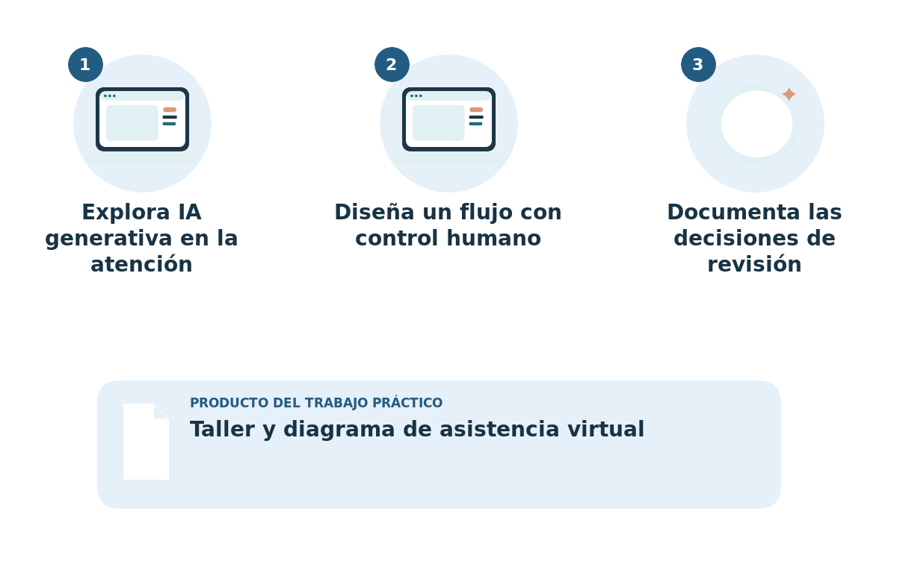

<div style="font-family: 'Segoe UI', Arial, sans-serif; color: #333; line-height: 1.6; max-width: 100%; margin-bottom: 20px;">
  <div style="background-color: #ffffff; background-image: linear-gradient(135deg, #ffffff 0%, #f8f9fa 100%); border: 1px solid #dee2e6; border-radius: 15px; padding: 25px 30px; box-shadow: 0 4px 12px rgba(0,0,0,0.05); position: relative; overflow: hidden;">
    <div style="position: absolute; left: 0; top: 0; bottom: 0; width: 6px; background: #0056b3;" aria-hidden="true"> </div>
    <div style="position: relative; z-index: 1;">
<h2 style="color: #1c3055; margin-top: 0; font-size: 1.4rem; font-weight: bold;">Entrega del Trabajo Práctico-Experimental de la Unidad 1</h2>
<p></p>

<p><strong>Asignatura:</strong> IA aplicada al análisis de datos y soporte a la decisión<br>
<strong>Actividad: Comparación de asistentes y recorrido de atención</strong><br><strong>Evidencia:</strong> Un documento con la comparación de respuestas, el recorrido de atención y las pruebas realizadas.</p>
<p>La tienda ficticia AndesMulti Hogar y Tecnología vende productos de hogar, oficina, electrónica, accesorios y cuidado personal. Su asistente confirmó productos agotados y pidió datos personales innecesarios. Diseña una atención que consulte la información antes de responder.</p>
<p><strong>Qué completar</strong></p>
<ol><li>Prepara tres consultas: disponibilidad de un producto, envío por ciudad y reclamo o devolución. Distingue qué respuestas necesitan datos exactos y cuáles pueden apoyarse en una redacción sugerida.</li><li>Prueba al menos dos asistentes autorizados o la simulación del aula. Guarda cada consulta y respuesta. Señala cuándo se inventa un dato que no se pudo comprobar.</li><li>Compara las respuestas con una búsqueda en una tabla o una regla fija. Explica cuándo conviene usar cada opción y cuándo hace falta combinarlas.</li><li>Dibuja el recorrido de atención: recibir la consulta, reconocer la necesidad, pedir permiso y solo los datos necesarios, consultar existencias o tarifas y responder. Incluye qué hacer si falta información y cuándo debe intervenir una persona.</li><li>Prueba el recorrido con un producto disponible en Quito, una última unidad con ciudad poco clara y un reclamo o pedido sin existencias confirmadas. Registra la ruta y las correcciones de cada prueba.</li><li>Reúne la comparación, el dibujo y las pruebas. Cita a García Alvarado y a Russell y Norvig, declara las herramientas usadas y explica por qué una respuesta convincente puede ser incorrecta.</li></ol>
<p><strong>Cómo entregar</strong></p>
<p>Entrega tu trabajo una sola vez al cierre de la semana 2. En esta Tarea de Moodle, selecciona <strong>Agregar entrega</strong>, adjunta tu evidencia y pulsa <strong>Guardar cambios</strong>. Si aparece <strong>Enviar tarea</strong>, púlsalo y comprueba el estado.</p>
<p><strong>Nombre del expediente:</strong> Apellido_Nombre_Trabajo_experimental_Unidad_1.</p>
<p><strong>Formato:</strong> Entrega un documento con capturas o transcripciones legibles y el dibujo del recorrido de atención.</p>
<p>Conserva el registro original del caso y anota las correcciones en tu expediente. Entrega el trabajo autónomo por separado.</p>
<details><summary style="color:#0056b3;font-weight:bold;cursor:pointer;">Rúbrica de la práctica · 16 puntos</summary><div style="overflow-x:auto;"><table class="table" style="width:100%;border-collapse:collapse;font-size:.9rem;"><thead><tr><th scope="col" style="padding:8px;background:#eef4fb;text-align:left;">Criterio y puntaje máximo</th><th scope="col" style="padding:8px;background:#eef4fb;text-align:left;">Completo (4 puntos · 100 %)</th><th scope="col" style="padding:8px;background:#eef4fb;text-align:left;">Adecuado (3 puntos · 75 %)</th><th scope="col" style="padding:8px;background:#eef4fb;text-align:left;">Parcial (2 puntos · 50 %)</th><th scope="col" style="padding:8px;background:#eef4fb;text-align:left;">Inicial (1 punto · 25 %)</th><th scope="col" style="padding:8px;background:#eef4fb;text-align:left;">Ausencia (0 puntos · 0 %)</th></tr></thead><tbody><tr><td style="padding:8px;border-bottom:1px solid #dee2e6;vertical-align:top;">1. Pertinencia del análisis <strong>(4 puntos)</strong></td><td style="padding:8px;border-bottom:1px solid #dee2e6;vertical-align:top;">Distingue cuándo usar un asistente para redactar, una herramienta para analizar datos o una regla fija. Detecta respuestas sin respaldo.</td><td style="padding:8px;border-bottom:1px solid #dee2e6;vertical-align:top;">Distingue las herramientas del caso, con pequeños errores al explicar cuándo conviene cada una.</td><td style="padding:8px;border-bottom:1px solid #dee2e6;vertical-align:top;">Compara las herramientas, pero no explica qué consultas necesitan datos comprobados.</td><td style="padding:8px;border-bottom:1px solid #dee2e6;vertical-align:top;">Hay un intento evaluable. Confunde las funciones de las herramientas o propone automatizar respuestas de inventario sin verificación de datos.</td><td style="padding:8px;border-bottom:1px solid #dee2e6;vertical-align:top;">No presenta evidencia del criterio «Pertinencia del análisis» que permita evaluarlo.</td></tr><tr><td style="padding:8px;border-bottom:1px solid #dee2e6;vertical-align:top;">2. Aplicación conceptual <strong>(4 puntos)</strong></td><td style="padding:8px;border-bottom:1px solid #dee2e6;vertical-align:top;">Dibuja una atención que consulta existencias, protege los datos y deriva a una persona. Comprueba las tres situaciones.</td><td style="padding:8px;border-bottom:1px solid #dee2e6;vertical-align:top;">Construye el diagrama funcional con validaciones principales y pequeñas omisiones en alguno de los tres escenarios de prueba.</td><td style="padding:8px;border-bottom:1px solid #dee2e6;vertical-align:top;">Presenta un flujo incompleto que omite puntos de control, privacidad o ruta de derivación ante fallos o dudas.</td><td style="padding:8px;border-bottom:1px solid #dee2e6;vertical-align:top;">Hay un intento evaluable. No presenta diagrama de flujo verificable ni ejecuta las pruebas de comprobación solicitadas.</td><td style="padding:8px;border-bottom:1px solid #dee2e6;vertical-align:top;">No presenta evidencia del criterio «Aplicación conceptual» que permita evaluarlo.</td></tr><tr><td style="padding:8px;border-bottom:1px solid #dee2e6;vertical-align:top;">3. Calidad del entregable <strong>(4 puntos)</strong></td><td style="padding:8px;border-bottom:1px solid #dee2e6;vertical-align:top;">Integra tabla comparativa, diagrama legible, pruebas comentadas y evidencias de ejecución en un único archivo claro y ordenado.</td><td style="padding:8px;border-bottom:1px solid #dee2e6;vertical-align:top;">Entrega todos los componentes requeridos con pequeños detalles visuales en el diagrama o redacción técnica.</td><td style="padding:8px;border-bottom:1px solid #dee2e6;vertical-align:top;">Entrega componentes parciales o un diagrama poco legible que impide reconstruir la lógica de atención.</td><td style="padding:8px;border-bottom:1px solid #dee2e6;vertical-align:top;">Hay un intento evaluable. Presenta un resumen breve desconectado de las evidencias prácticas de exploración y flujo.</td><td style="padding:8px;border-bottom:1px solid #dee2e6;vertical-align:top;">No presenta evidencia del criterio «Calidad del entregable» que permita evaluarlo.</td></tr><tr><td style="padding:8px;border-bottom:1px solid #dee2e6;vertical-align:top;">4. Uso de fuentes y referencias <strong>(4 puntos)</strong></td><td style="padding:8px;border-bottom:1px solid #dee2e6;vertical-align:top;">Fundamenta sus criterios en las lecturas base (García Alvarado; Russell y Norvig), identifica el caso como simulado y aplica formato de citas de la guía sin errores.</td><td style="padding:8px;border-bottom:1px solid #dee2e6;vertical-align:top;">Cita las lecturas y declara las herramientas digitales empleadas con detalles menores de formato bibliográfico.</td><td style="padding:8px;border-bottom:1px solid #dee2e6;vertical-align:top;">Relaciona escasamente sus criterios con la bibliografía del curso o presenta fallos frecuentes en citación.</td><td style="padding:8px;border-bottom:1px solid #dee2e6;vertical-align:top;">Hay un intento evaluable. Omite fuentes consultadas, inventa referencias o presenta pruebas ficticias como datos de una empresa real.</td><td style="padding:8px;border-bottom:1px solid #dee2e6;vertical-align:top;">No presenta evidencia del criterio «Uso de fuentes y referencias» que permita evaluarlo.</td></tr></tbody></table></div></details>
    </div>
  </div>
</div>

